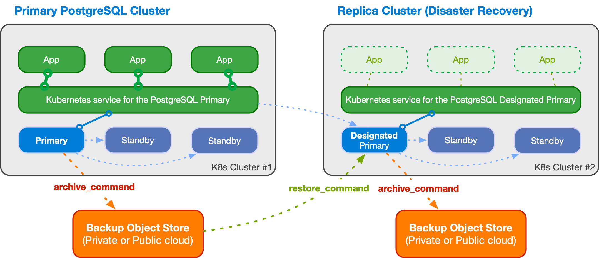

Architecture
This section covers the main architectural aspects you need to consider when deploying PostgreSQL in Kubernetes.
Important
We encourage you to read an article that we've written for the CNCF blog with title "Recommended Architectures for PostgreSQL in Kubernetes".
Important
If you are deploying PostgreSQL in a self-managed Kubernetes environment, please make sure you read the "Kubernetes architecture" below when you start planning your journey to the Cloud Native world.
Synchronizing the state
PostgreSQL is a database management system and, as such, it needs to be treated as a stateful workload in Kubernetes. While stateless applications mainly use traffic redirection to achieve High Availability (HA) and Disaster Recovery (DR), in the case of a database, state must be replicated in multiple locations, preferably in a continuous and instantaneous way, by adopting either of the following two strategies:
- storage-level replication, normally persistent volumes
- application-level replication, in this specific case PostgreSQL
CloudNativePG relies on application-level replication, for a simple reason: the PostgreSQL database management system comes with robust and reliable built-in physical replication capabilities based on Write Ahead Log (WAL) shipping, which have been used in production by millions of users all over the world for over a decade.
PostgreSQL supports both asynchronous and synchronous streaming replication over the network, as well as asynchronous file-based log shipping (normally used as a fallback option, for example, to store WAL files in an object store). Replicas are usually called standby servers and can also be used for read-only workloads, thanks to the Hot Standby feature.
Important
We recommend against storage-level replication with PostgreSQL, although CloudNativePG allows you to adopt that strategy. For more information, please refer to the talk given by Chris Milsted and Gabriele Bartolini at KubeCon NA 2022 entitled "Data On Kubernetes, Deploying And Running PostgreSQL And Patterns For Databases In a Kubernetes Cluster" where this topic was covered in detail.
Kubernetes architecture
Kubernetes natively provides the possibility to span separate physical locations - also known as data centers, failure zones, or more frequently availability zones - connected to each other via redundant, low-latency, private network connectivity.
Being a distributed system, the recommended minimum number of availability zones for a Kubernetes cluster is three (3), in order to make the control plane resilient to the failure of a single zone. For details, please refer to "Running in multiple zones". This means that each data center is active at any time and can run workloads simultaneously.
Note
Most of the public Cloud Providers' managed Kubernetes services already provide 3 or more availability zones in each region.
Multi-availability zone Kubernetes clusters
The multi-availability zone Kubernetes architecture with three (3) or more zones is the one that we recommend for PostgreSQL usage. This scenario is typical of Kubernetes services managed by Cloud Providers.

Such an architecture enables the CloudNativePG operator to control the full
lifecycle of a Cluster resource across the zones within a single Kubernetes
cluster, by treating all the availability zones as active: this includes, among
other operations,
scheduling the workloads in a declarative manner (based on
affinity rules, tolerations and node selectors), automated failover,
self-healing, and updates. All will work seamlessly across the zones in a single
Kubernetes cluster.
Please refer to the "PostgreSQL architecture" section below for details on how you can design your PostgreSQL clusters within the same Kubernetes cluster through shared-nothing deployments at the storage, worker node, and availability zone levels.
Moreover, you can take advantage of additional Kubernetes clusters, by using them to host "passive" PostgreSQL replica clusters. This should be used primarily for DR, read-only operations, or cross-region availability, even though failovers and promotions in this case must be done manually.

Single availability zone Kubernetes clusters
If your Kubernetes cluster has only one availability zone, CloudNativePG still provides you with a lot of features to improve HA and DR outcomes for your PostgreSQL databases, pushing the single point of failure (SPoF) to the level of the zone as much as possible - i.e. the zone must have an outage before your CloudNativePG clusters suffer a failure.
This scenario is typical of self-managed on-premise Kubernetes clusters, where only one data center is available.
Single availability zone Kubernetes is unfortunately the only viable option where just two (2) data centers are available within reach of a low latency connection (normally in the same metropolitan area): having only two zones precludes users from creating a multi-availability zone Kubernetes cluster (as the minimum number of 3 zones is not reached) and forces them to create two different Kubernetes clusters in an active/passive configuration, where the second cluster is used primarily for Disaster Recovery.

Hint
If you are at en early stage of your Kubernetes journey, please share this document with your infrastructure team. The two data centers setup might be simply the result of a "lift-and-shift" transition to Kubernetes from a traditional bare-metal or VM based infrastructure, and the benefits that Kubernetes offers in a 3+ zone scenario might not have been known, or addressed at the time the infrastructure architecture was designed. Ultimately, a third physical location connected to the other two might represent a valid option to consider for organization, as it reduces the overall costs of the infrastructure by moving the day-to-day complexity from the application level down to the physical infrastructure level.
Please refer to the "PostgreSQL architecture" section below for details on how you can design your PostgreSQL clusters within your single availability zone Kubernetes cluster through shared-nothing deployments at the storage and worker node levels only. For HA, in such a scenario it becomes even more important that the PostgreSQL instances be located on different worker nodes and do not share the same storage.
For DR, you can push the SPoF above the single zone, by using additional Kubernetes clusters to host "passive" PostgreSQL replica clusters. As with other Kubernetes workloads in this scenario, promotion of a Kubernetes cluster as primary must be done manually. As explained below, no automated failover across Kubernetes clusters is available for PostgreSQL at the moment with CloudNativePG, as the operator can only work within a single Kubernetes cluster.
PostgreSQL architecture
CloudNativePG supports clusters based on asynchronous and synchronous streaming replication to manage multiple hot standby replicas within the same Kubernetes cluster, with the following specifications:
- One primary, with optional multiple hot standby replicas for HA
- Available services for applications:
-rw: applications connect only to the primary instance of the cluster-ro: applications connect only to hot standby replicas for read-only-workloads-r: applications connect to any of the instances for read-only workloads
- Shared-nothing architecture recommended for better resilience of the PostgreSQL cluster:
- PostgreSQL instances should reside on different Kubernetes worker nodes and share only the network - as a result, instances should not share the storage and preferably use local volumes attached to the node they run on
- PostgreSQL instances should reside in different availability zones within the same Kubernetes cluster / region
The below diagram provides a simplistic view of the recommended shared-nothing architecture for a PostgreSQL cluster spanning across 3 different availability zones, running on separate nodes, each with dedicated local storage for PostgreSQL data.

CloudNativePG automatically takes care of updating the above services if
the topology of the cluster changes. For example, in case of failover, it
automatically updates the -rw service to point to the promoted primary,
making sure that traffic from the applications is seamlessly redirected.
Replication
Please refer to the "Replication" section for more information about how CloudNativePG relies on PostgreSQL replication, including synchronous settings.
Connecting from an application
Please refer to the "Connecting from an application" section for information about how to connect to CloudNativePG from a stateless application within the same Kubernetes cluster.
Connection Pooling
Please refer to the "Connection Pooling" section for information about how to take advantage of PgBouncer as a connection pooler, and create an access layer between your applications and the PostgreSQL clusters.
Read-write workloads
Applications can decide to connect to the PostgreSQL instance elected as current primary by the Kubernetes operator, as depicted in the following diagram:

Applications can use the -rw suffix service.
In case of temporary or permanent unavailability of the primary, for High
Availability purposes CloudNativePG will trigger a failover, pointing the -rw
service to another instance of the cluster.
Read-only workloads
Important
Applications must be aware of the limitations that Hot Standby presents and familiar with the way PostgreSQL operates when dealing with these workloads.
Applications can access hot standby replicas through the -ro service made available
by the operator. This service enables the application to offload read-only queries from the
primary node.
The following diagram shows the architecture:

Applications can also access any PostgreSQL instance through the
-r service.
Deployments across Kubernetes clusters
Info
CloudNativePG supports deploying PostgreSQL across multiple Kubernetes clusters through a feature called Replica Cluster, which is described in this section.
In a distributed PostgreSQL cluster there can only be a single PostgreSQL instance acting as a primary at all times. This means that applications can only write inside a single Kubernetes cluster, at any time.
However, for business continuity objectives it is fundamental to:
- reduce global recovery point objectives (RPO) by storing PostgreSQL backup data in multiple locations, regions and possibly using different providers (Disaster Recovery)
- reduce global recovery time objectives (RTO) by taking advantage of PostgreSQL replication beyond the primary Kubernetes cluster (High Availability)
In order to address the above concerns, CloudNativePG introduces the concept of a PostgreSQL Replica Cluster. Replica clusters are the CloudNativePG way to enable multi-cluster deployments in private, public, hybrid, and multi-cloud contexts.
A replica cluster is a separate Cluster resource:
- having either
pg_basebackupor fullrecoveryas thebootstrapoption from a defined external source cluster - having the
replica.enabledoption set totrue - replicating from a defined external cluster identified by
replica.source, normally located outside the Kubernetes cluster - replaying WAL information received from the recovery object store
(using PostgreSQL's
restore_commandparameter), or via streaming replication (using PostgreSQL'sprimary_conninfoparameter), or any of the two (in case both thebarmanObjectStoreandconnectionParametersare defined in the external cluster) - accepting only read connections, as supported by PostgreSQL's Hot Standby
Seealso
Please refer to the "Bootstrap" section for more information
about cloning a PostgreSQL cluster from another one (defined in the
externalClusters section).
The diagram below depicts a PostgreSQL cluster spanning over two different Kubernetes clusters, where the primary cluster is in the first Kubernetes cluster and the replica cluster is in the second. The second Kubernetes cluster acts as the company's disaster recovery cluster, ready to be activated in case of disaster and unavailability of the first one.

A replica cluster can have the same architecture of the primary cluster. In place of the primary instance, a replica cluster has a designated primary instance, which is a standby server with an arbitrary number of cascading standby servers in streaming replication (symmetric architecture).
The designated primary can be promoted at any time, making the replica cluster a primary cluster capable of accepting write connections.
Warning
CloudNativePG does not perform any cross-cluster switchover or failover at the moment. Such operation must be performed manually or delegated to a multi-cluster/federated cluster aware authority. Each PostgreSQL cluster is independent from any other.
The designated primary in the above example is fed via WAL streaming
(primary_conninfo), with fallback option for file-based WAL shipping through
the restore_command and barman-cloud-wal-restore.
CloudNativePG allows you to define multiple replica clusters. You can also define replica clusters with a lower number of replicas, and then increase this number when the cluster is promoted to primary.
Replica clusters
Please refer to the "Replica Clusters" section for more information about physical replica clusters work and how you can configure read-only clusters in different Kubernetes cluster to improve your global disaster recovery and HA strategy.